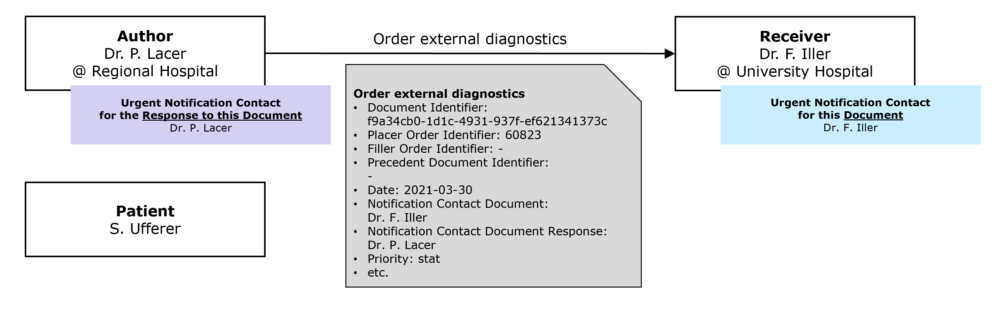

CH ORF (R4)
3.0.0 - trial-use

CH ORF (R4)
3.0.0 - trial-use

This page is part of the CH ORF (R4) (v3.0.0: STU 3) based on FHIR (HL7® FHIR® Standard) R4. The current version which supersedes this version is 3.0.1. For a full list of available versions, see the Directory of published versions
Madame S. Ufferer a rendez-vous le 15 mars 2021 chez son médecin généraliste, le Dr O. Rderplacer, au cabinet de groupe 'Happy Doctors'. La patiente se plaint de douleurs récurrentes au genou. Sur la base de l'anamnèse et de l'examen physique, le médecin décide de prescrire une radiographie qui sera réalisée à l'institut de radiologie de l'hôpital 'Happy Hospital' du Dr O. Rderfiller. L'assistante médicale D. Ataenterer saisit l'ordre de radiologie et l'envoie à l'institut de radiologie. Il est également indiqué dans le mandat que la copie de ce mandat (ainsi que tous les résultats qui en découlent) doit être envoyée à la patiente.

Madame S. Ufferer ressent une douleur lancinante dans le bas-ventre tard dans la soirée du 30 mars 2021. Son médecin de famille du cabinet de groupe 'Happy Doctors', qui est de garde, adresse la patiente à l'hôpital régional. Le médecin de garde de l'hôpital régional, le Dr P. Lacer, lui prescrit un scanner thoracique. Sur la base du scanner thoracique, il soupçonne un anévrisme de l'aorte. Comme aucun radiologue n'est de garde à l'hôpital régional pendant ce quart de nuit, le Dr P. Lacer téléphone à la radiologue Dr F. Iller de l'hôpital universitaire et lui envoie la demande de diagnostic externe. En raison du diagnostic de suspicion, le temps presse et la radiologue veut être contactée d'urgence après réception de la commande avec les images du scanner. La suspicion d'un anévrisme de l'aorte abdominale se confirme et le Dr F. Iller le signale immédiatement par téléphone au Dr P. Lacer. Mme S. Ufferer est donc transférée en urgence en chirurgie thoracique et opérée immédiatement.

Patient: Mme S. Ufferer Client:
Une demande de soins à domicile (ou d'un autre service ambulatoire, p. ex. service de repas) peut être faite dans différentes situations :
Le patient est à domicile
Le patient est actuellement dans un établissement hospitalier et va bientôt rentrer chez lui
Le patient est à domicile, mais il sera admis dans un établissement stationnaire (p. ex. un hôpital) et rentrera ensuite chez lui à la suite de ce séjour (ou d'un séjour hospitalier ultérieur, p. ex. une réadaptation).
En cas de séjour stationnaire avant les soins à domicile, la date de sortie et éventuellement la date d'entrée sont importantes pour la planification des soins à domicile ; l'institution du séjour stationnaire doit également être connue pour d'éventuelles questions.
L'inscription pour des soins à domicile se fait souvent à l'initiative de tiers. Il est également important de savoir si l'initiateur est le représentant légal.
Souvent, l'inscription aux soins à domicile ne provient pas du médecin de famille - surtout pour les patients hospitalisés - mais celui-ci doit être connu par les soins à domicile.
Dans la pratique, une inscription (provisoire) pour des soins à domicile peut s'avérer nécessaire avant que le patient n'ait donné son accord formel. Cela doit ressortir de l'inscription.
Les indications ci-dessus sont de nature administrative ; CH ORF prévoit des attributs correspondants dans la version 1.1. En ce qui concerne le consentement du patient, le formulaire permet une présentation différenciée de la situation sous forme de texte libre.
Pour la saisie d'autres données médicales et de soins, nous renvoyons à CH eTOC.
La possibilité de fournir des informations supplémentaires pour l'inscription aux soins à domicile (voir ci-dessus) couvre également les exigences administratives d'une lettre de sortie. En outre, dans ce cas d'application, d'autres données médicales et de soins sont nécessaires. Pour ce faire, nous vous renvoyons à CH eTOC.
La planification des rendez-vous n'est pas simple pour diverses raisons:
Il n'est pas facile de couvrir toutes ces éventualités avec une simple application. C'est pourquoi il n'est pas prévu de planifier de manière exhaustive les rendez-vous pour les transferts dans le cadre de ce guide. Il est toutefois possible d'indiquer la date et l'heure, et de préciser si le rendez-vous a été confirmé ou simplement proposé. Il est également possible d'indiquer les dates/heures préférées.
Certains prestataires de soins de santé proposent leurs services sur plusieurs sites, de sorte qu'il peut arriver qu'une commande/prescription donne lieu à plusieurs consultations (par exemple, un holter ECG avec un rendez-vous pour la pose de l'appareil au début et un rendez-vous pour le retour à la fin). En CH ORF, plusieurs rendez-vous (n Appointments) sont donc prévus par ordre de prestation (ServiceRequest).